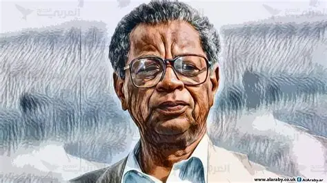
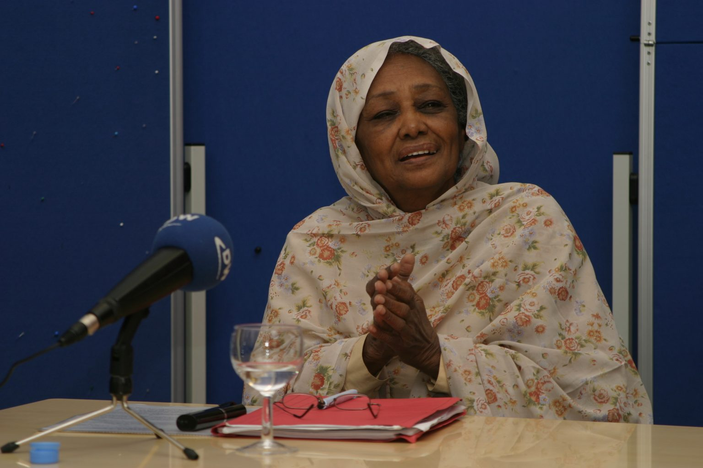
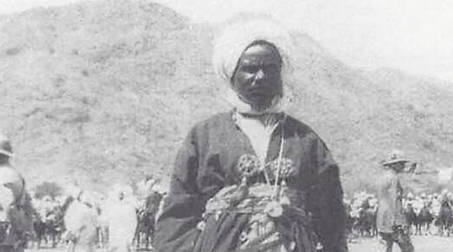
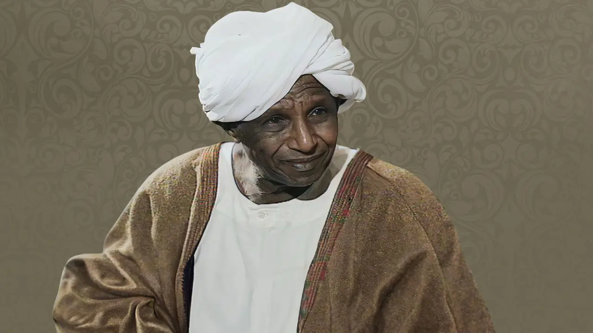
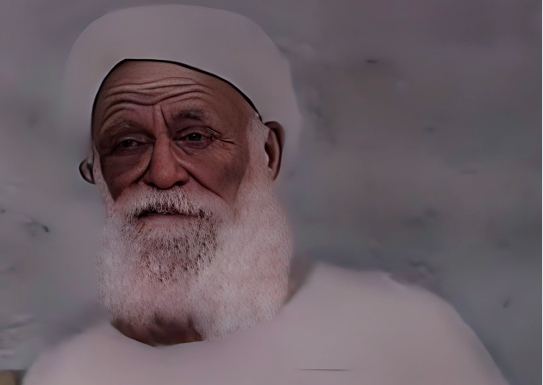

شخصيات سودانية بارزة
هنا نسلط الضوء على أعلام السودان الذين تركوا بصمة في التاريخ، الأدب، السياسة، والفن.

الطيب صالح
روائي سوداني عالمي، اشتهر بروايته "موسم الهجرة إلى الشمال"، ويُعد من أبرز الكتاب العرب في القرن العشرين.

فاطمة أحمد إبراهيم
أول امرأة تُنتخب في البرلمان السوداني، ومناضلة في مجال حقوق المرأة، وعضو مؤسس في الاتحاد النسائي السوداني.

علي دينار
آخر سلاطين سلطنة دارفور، قاوم الاستعمار البريطاني، ويُعد رمزًا للسيادة الوطنية في غرب السودان.

عبدالله الطيب
أديب ومفكر سوداني، له مساهمات كبيرة في الأدب العربي، وكان أستاذًا جامعيًا ومترجمًا للقرآن الكريم.

عثمان دقنة
قائد بارز في الثورة المهدية، اشتهر بشجاعته في مقاومة الاحتلال البريطاني في شرق السودان.